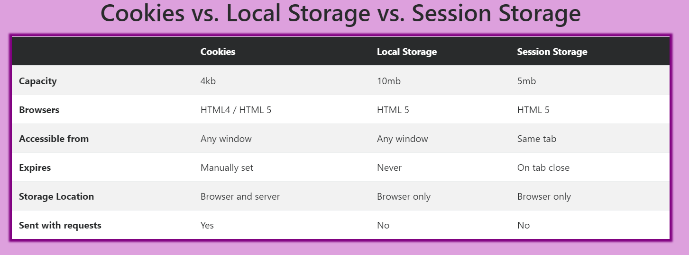

Duomenų saugojimas vartotojo dalyje
Cookies, SessionStorage ir LocalStorage informacija yra saugojama jūsų įrenginyje/aplikacijoje/naršyklėje...
Skirtingose svetainėse/naršyklėse/įrenginiuose esantys cookies/localStorage/sessionStorage yra saugojami atskirai.
Visi lokaliai saugojami duomenys PRIVALO būti string pavidalu!!!
Cookies
Saugojama tik iki 4kb.
Reikia rankiniu būdu nustatyti iki kada sauojami duomenys.
Siunčiami su request'ais į back-end'ą.
Session
Laiko duomenis aplikacijoje/naršyklėje, per kurią atidaroma kažkuri svetainė, kurioje tie duomenys buvo saugojami.
Kai pasibaigia sesija (kai yra išjungiama svetainė) šitie duomenys yra ištrinami.
Dažnai naudojamas saugoti JWT token'ą.
Syntax
- sessionStorage.length - grąžina kiek yra išsaugotų elementų
- sessionStorage.setItem('raktas','reiksme') - sukuriamas elementas
- sessionStorage.getItem('raktas') - grąžinama elemento reikšmė pagal raktą
- sessionStorage.removeItem('raktas') - trinamas elementas pagal raktą
- sessionStorage.clear() - ištrinama viskas iš sessionStorage
- sessionStorage.key(index) - grąžinamas raktinis žodis esantis nurodytame indekse
Local
Laiko duomenis aplikacijoje/naršyklėje, per kurią atidaroma kažkuri svetainė, kurioje tie duomenys buvo saugojami.
Duomenys yra saugojami visam laikui. Jie turi būti trinami rankiniu būdu.
Syntax
- localStorage.length - grąžina kiek yra išsaugotų elementų
- localStorage.setItem('raktas','reiksme') - sukuriamas elementas
- localStorage.getItem('raktas') - grąžinama elemento reikšmė pagal raktą
- localStorage.removeItem('raktas') - trinamas elementas pagal raktą
- localStorage.clear() - ištrinama viskas iš localStorage
- localStorage.key(index) - grąžinamas raktinis žodis esantis nurodytame indekse